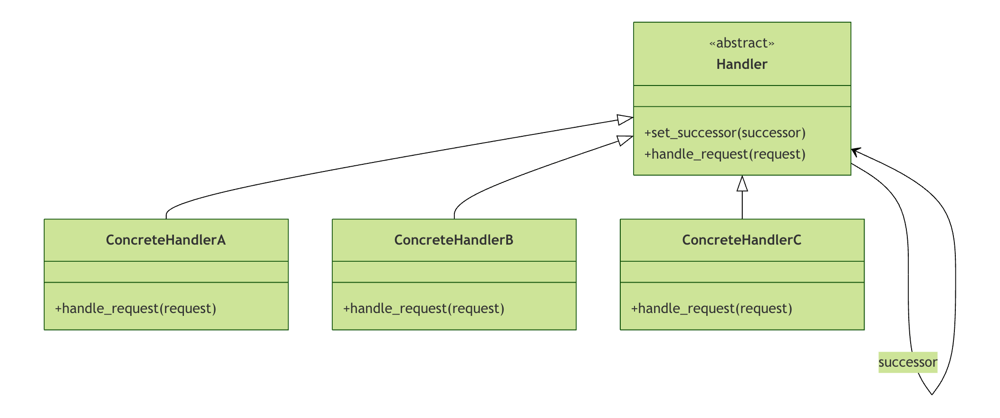

Python 責任連鎖パターン
責任連鎖パターンは、リクエストを処理チェーンに沿って渡すことを可能にする行動デザインパターンです。リクエストを受け取った各ハンドラーは、リクエストを処理するか、チェーン上の次のハンドラーに渡すことができます。
生活における類比
会社の休暇承認プロセスを想像してみてください：
- 1〜3日→ グループリーダーが承認
- 4〜7日→ 部門マネージャーが承認
- 8日以上→ 総支配人が承認
休暇申請を提出すると、申請はこのチェーンに沿って順に渡され、処理権限を持つ人にたどり着くまで続きます。これが責任連鎖パターンの現実の具現化です。
パターンの核心的な考え方
責任連鎖パターンの核心はリクエストの送信者と受信者の結合を疎結合にすることにあり、複数のオブジェクトにリクエストを処理する機会を与え、送信者と受信者の緊密な結合を回避します。
責任連鎖パターンの構造
UMLクラス図を通じて責任連鎖パターンの構成構造を理解しましょう：

核心コンポーネントの説明
Handler（抽象ハンドラー）
- リクエストを処理するインターフェースを定義する
- 後続（次のハンドラー）を設定するメソッドを含む
- 後続チェーンのデフォルト動作を実装できる
ConcreteHandler（具体的なハンドラー）
- 具体的な処理ロジックを実装する
- リクエストを処理できる場合は処理する
- それ以外の場合はリクエストを後続（次のハンドラー）に転送する
基本実装：休暇承認システム
Pythonで簡単な休暇承認システムを実装して、責任連鎖パターンを理解しましょう。
ステップ1：抽象ハンドラーを定義する
例
from typing import Optional
class Approver(ABC):
"""承認者抽象クラス"""
def __init__(self, name: str):
self.name = name
self.successor: Optional['Approver'] = None
def set_successor(self, successor: 'Approver'):
"""後続の承認者を設定する"""
self.successor = successor
@abstractmethod
def process_request(self, leave_request: 'LeaveRequest'):
"""休暇リクエストを処理する抽象メソッド"""
pass
ステップ2：リクエストオブジェクトを定義する
例
@dataclass
class LeaveRequest:
"""休暇リクエストのデータクラス"""
employee_name: str # 従業員名
leave_days: int # 休暇日数
reason: str # 休暇理由
def __str__(self):
return f"{self.employee_name} は休暇を {self.leave_days} 日申請します。理由：{self.reason}"
ステップ3：具体的なハンドラーを実装する
例
"""グループリーダー - 1〜3日の休暇を処理"""
def process_request(self, leave_request: LeaveRequest):
if leave_request.leave_days <= 3:
print(f"グループリーダー {self.name} は {leave_request} を承認しました")
elif self.successor is not None:
# 権限を超えているため、次のレベルに渡す
print(f"グループリーダー {self.name} は権限がないため、上長に転送します")
self.successor.process_request(leave_request)
else:
print("このリクエストを処理できません：適切な承認者がいません")
class DepartmentManager(Approver):
"""部門マネージャー - 4〜7日の休暇を処理"""
def process_request(self, leave_request: LeaveRequest):
if 4 <= leave_request.leave_days <= 7:
print(f"部門マネージャー {self.name} は {leave_request} を承認しました")
elif self.successor is not None:
# 権限を超えているため、次のレベルに渡す
print(f"部門マネージャー {self.name} は権限がないため、上長に転送します")
self.successor.process_request(leave_request)
else:
print("このリクエストを処理できません：適切な承認者がいません")
class GeneralManager(Approver):
"""総支配人 - 8日以上の休暇を処理"""
def process_request(self, leave_request: LeaveRequest):
if leave_request.leave_days >= 8:
print(f"総支配人 {self.name} は {leave_request} を承認しました")
else:
print("このリクエストを処理できません：休暇日数が要件を満たしていません")
ステップ4：責任連鎖を構築してテストする
例
# 承認者を作成
team_leader = TeamLeader("张三")
dept_manager = DepartmentManager("李四")
general_manager = GeneralManager("王五")
# 責任連鎖を構築：グループリーダー → 部門マネージャー → 総支配人
team_leader.set_successor(dept_manager)
dept_manager.set_successor(general_manager)
# テストケースを作成
test_cases = [
LeaveRequest("小明", 2, "風邪と発熱"),
LeaveRequest("小红", 5, "帰省して家族に会う"),
LeaveRequest("小刚", 10, "結婚休暇"),
LeaveRequest("小李", 15, "海外旅行")
]
print("=== 休暇承認テスト ===\n")
# すべての休暇リクエストを処理
for request in test_cases:
print(f"リクエスト処理: {request.employee_name} が {request.leave_days} 日休暇")
team_leader.process_request(request)
print("-" * 50)
if __name__ == "__main__":
main()
実行結果
=== 请假审批测试 === 处理请求: 小明 请假 2 天 组长 张三 批准了 小明 申请请假 2 天，原因：感冒发烧 -------------------------------------------------- 处理请求: 小红 请假 5 天 组长 张三 无权限，转交给上级处理 部门经理 李四 批准了 小红 申请请假 5 天，原因：回家探亲 -------------------------------------------------- 处理请求: 小刚 请假 10 天 组长 张三 无权限，转交给上级处理 部门经理 李四 无权限，转交给上级处理 总经理 王五 批准了 小刚 申请请假 10 天，原因：结婚休假 -------------------------------------------------- 处理请求: 小李 请假 15 天 组长 张三 无权限，转交给上级处理 部门经理 李四 无权限，转交给上级处理 总经理 王五 批准了 小李 申请请假 15 天，原因：出国旅游 --------------------------------------------------
応用：Webリクエストフィルター
責任連鎖パターンはWeb開発で非常に一般的であり、特にミドルウェアやフィルターチェーンでよく見られます。簡単なHTTPリクエストフィルターチェーンを実装しましょう。
ステップ1：リクエストとレスポンスオブジェクトを定義する
例
from typing import Dict, Any
@dataclass
class HttpRequest:
"""HTTPリクエストオブジェクト"""
method: str
path: str
headers: Dict[str, str]
body: Any = None
user: Dict[str, Any] = None
@dataclass
class HttpResponse:
"""HTTPレスポンスオブジェクト"""
status_code: int
headers: Dict[str, str]
body: Any = None
ステップ2：フィルターチェーンを実装する
例
"""フィルター抽象クラス"""
def __init__(self):
self.next_filter: Optional['Filter'] = None
def set_next(self, next_filter: 'Filter'):
"""次のフィルターを設定する"""
self.next_filter = next_filter
def do_filter(self, request: HttpRequest, response: HttpResponse) -> bool:
"""
フィルター操作を実行
Trueを返すと実行を継続し、Falseを返すと中断する
"""
if self.handle(request, response):
if self.next_filter is not None:
return self.next_filter.do_filter(request, response)
return True
return False
@abstractmethod
def handle(self, request: HttpRequest, response: HttpResponse) -> bool:
"""具体的なフィルター処理ロジック"""
pass
class AuthenticationFilter(Filter):
"""認証フィルター"""
def handle(self, request: HttpRequest, response: HttpResponse) -> bool:
print("認証を実行中...")
# 認証ロジックをシミュレート
token = request.headers.get('Authorization')
if token == "Bearer valid-token":
request.user = {"id": 1, "name": "张三", "role": "user"}
print("✓ 認証成功")
return True
else:
response.status_code = 401
response.body = {"error": "未承認のアクセス"}
print("✗ 認証失敗")
return False
class LoggingFilter(Filter):
"""ログ記録フィルター"""
def handle(self, request: HttpRequest, response: HttpResponse) -> bool:
print(f"リクエストログを記録: {request.method} {request.path}")
return True # 常に実行を継続する
class PermissionFilter(Filter):
"""権限チェックフィルター"""
def handle(self, request: HttpRequest, response: HttpResponse) -> bool:
print("ユーザー権限をチェック中...")
if request.user and request.user.get('role') == 'admin':
print("✓ 権限チェック通過")
return True
else:
response.status_code = 403
response.body = {"error": "権限が不足しています"}
print("✗ 権限チェック失敗")
return False
ステップ3：フィルターチェーンを使用してリクエストを処理する
例
"""HTTPリクエストを処理する"""
# デフォルトレスポンスを作成
response = HttpResponse(
status_code=200,
headers={"Content-Type": "application/json"},
body={"message": "リクエスト成功"}
)
# フィルターチェーンを作成
auth_filter = AuthenticationFilter()
logging_filter = LoggingFilter()
permission_filter = PermissionFilter()
# フィルターチェーンを構築：ログ → 認証 → 権限
logging_filter.set_next(auth_filter)
auth_filter.set_next(permission_filter)
# フィルターチェーンを実行
print("HTTPリクエストの処理を開始...")
logging_filter.do_filter(request, response)
print("リクエスト処理完了")
return response
# 異なるリクエストシナリオをテスト
def test_filter_chain():
print("=== HTTPフィルターチェーンテスト ==="\n")
# テストケース1：有効な管理者リクエスト
print("テストケース1：有効な管理者リクエスト")
request1 = HttpRequest(
method="GET",
path="/admin/data",
headers={"Authorization": "Bearer valid-token"}
)
response1 = process_http_request(request1)
print(f"レスポンスステータスコード: {response1.status_code}")
print(f"レスポンス内容: {response1.body}"\n")
# テストケース2：未承認のリクエスト
print("テストケース2：未承認のリクエスト")
request2 = HttpRequest(
method="GET",
path="/admin/data",
headers={"Authorization": "Bearer invalid-token"}
)
response2 = process_http_request(request2)
print(f"レスポンスステータスコード: {response2.status_code}")
print(f"レスポンス内容: {response2.body}"\n")
if __name__ == "__main__":
test_filter_chain()
責任連鎖パターンの長所と短所
長所
1. 結合度を下げる
リクエスト送信者は、どのオブジェクトがそのリクエストを処理するかを知る必要がなく、受信者もリクエストの全体像を知る必要がありません。
2. 柔軟性の向上
クライアントコードに影響を与えずに、ハンドラを動的に追加、削除、再配置できます。
3. オブジェクトの責務の簡素化
各ハンドラは自身の責務範囲内のリクエストのみに注意を払えばよく、単一責任の原則に適合します。
4. 拡張が容易
新しいハンドラの追加は非常に簡単で、処理インターフェースを実装してチェーンに追加するだけです。
短所
1. リクエストが処理されない可能性がある
責任の連鎖（チェーン）の設定が適切でない場合、リクエストがチェーンの末端に到達しても、どのハンドラにも処理されない可能性があります。
2. パフォーマンスへの考慮
責任の連鎖が長いと、特に大量のリクエストを処理する場合にパフォーマンスに影響を与える可能性があります。
3. デバッグが困難
リクエストの処理経路が不明確な場合があり、デバッグ時にリクエストの完全な処理フローを追跡するのが困難です。
実際の適用シナリオ
1. イベント処理システム
GUIのイベントバブリングメカニズムは、責任の連鎖（Chain of Responsibility）パターンの典型的な応用です。
例
def __init__(self, name, target):
self.name = name
self.target = target
self.handled = False
class Widget:
def __init__(self, parent=None):
self.parent = parent
def handle_event(self, event):
# まず自分で処理し、処理できない場合は親コンポーネントに渡す
if self.on_event(event):
event.handled = True
elif self.parent:
self.parent.handle_event(event)
def on_event(self, event):
# サブクラスがこのメソッドをオーバーライドして、具体的なイベント処理を実装する
return False
2. ログシステム
異なるレベルのログメッセージは、異なるハンドラによって処理されます。
例
# ロガーを作成
logger = logging.getLogger('my_app')
logger.setLevel(logging.DEBUG)
# ハンドラチェーンを作成
console_handler = logging.StreamHandler()
file_handler = logging.FileHandler('app.log')
# ハンドラのレベルを設定
console_handler.setLevel(logging.WARNING)
file_handler.setLevel(logging.DEBUG)
# ロガーに追加
logger.addHandler(console_handler)
logger.addHandler(file_handler)
# 使用法：DEBUG と INFO レベルはファイルにのみ記録され、WARNING 以上はコンソールにも出力される
logger.debug('デバッグ情報') # ファイルにのみ記録
logger.warning('警告情報') # コンソールとファイルの両方に出力
ベストプラクティスと注意事項
1. デフォルトの処理動作を設定する
責任の連鎖の末端にデフォルトのハンドラを配置して、リクエストが失われないようにします。
例
"""デフォルトハンドラ - 処理されていないすべてのリクエストを処理する"""
def process_request(self, leave_request: LeaveRequest):
print(f"デフォルトハンドラ：{leave_request} を処理できません。リクエストパラメータを確認してください")
2. チェーンの長さを制御する
過度に長い責任の連鎖の作成を避けてください。パフォーマンスが低下し、デバッグが困難になります。
3. 明確な処理ルール
各ハンドラが明確な処理境界を持つことを保証し、責務の重複を避けます。
4. コンポジットパターンの使用を検討する
複雑な責任の連鎖の場合、コンポジットパターンを使用してハンドラ間の関係を管理することを検討できます。
まとめ
責任の連鎖（Chain of Responsibility）パターンは、強力で柔軟なデザインパターンです。リクエストの送信者と受信者を分離することで、複数のオブジェクトの協調が必要なシーンを処理するエレガントな方法を提供します。
重要なポイント
- 核心的な考え方：複数のオブジェクトにリクエストを処理する機会を与え、リクエスト送信者と受信者の結合を避ける
- 適用シーン：複数のオブジェクトが同じリクエストを処理できるが、具体的にどのオブジェクトが処理するかは実行時に決定する必要がある
- 実装のポイント：処理インターフェースの定義、処理チェーンの構築、リクエストの受け渡し
- Python の特徴：Python の動的な特性を利用することで、責任の連鎖パターンをより柔軟に実装できる
クリックしてノートを共有
<p style="font-size:14px;">ノートはこの記事の内容を拡張したものである必要があります！</p><br> <p style="font-size:12px;"><a href="../tougao.html" target="_blank">記事の投稿は、ここをクリックしてください</a></p> <p style="font-size:14px;"><a href="../w3cnote/runoob-user-test-intro.html" target="_blank">登録招待コードの取得方法</a></p> <h3 class="text-muted"><i class="fa fa-info-circle" aria-hidden="true"></i> ノートを共有する前に<a href=";.html" class="runoob-pop">ログイン</a>する必要があります！</h3> <p><a href="../w3cnote/runoob-user-test-intro.html" target="_blank">登録招待コードの取得方法</a></p>